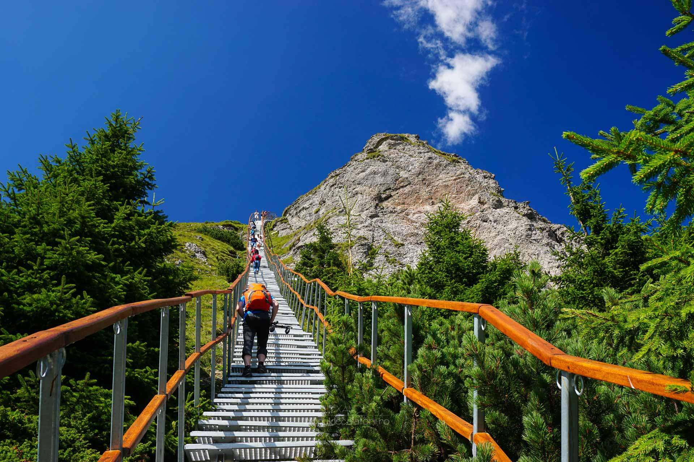
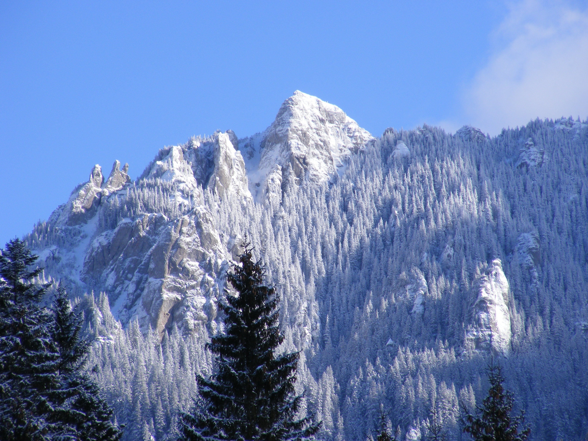

Traseul spre Masiful Ceahlău


7 trasee:
-Cabana Izvoru Muntelui (797 m) - Curmatura Lutu Rosu - Piatra cu Apa - Cabana Dochia (1750 m)
-Cabana Izvoru Muntelui (797 m) - Stanca Dochiei - Jgheabu cu Hotar - Cabana Dochia (1750 m)
-Cabana Izvoru Muntelui - Poiana Maicilor - Claile lui Miron - Ocolasul Mic - Cabana Dochia
-Statiunea Durau - Cabana Fantanele - Toaca - Cabana Dochia
-Statiunea Durau-Poiana Viezuri-Cascada Duruitoarea - Polita Arinis - Piatra Lacrimata - Cabana Dochia
-Satul Neagra-Varful Negrii-Poiana Varate-Poiana Maicilor - Platoul Ocolasului Mic - Cabana Dochia.
-Comuna Bicazu Ardelean - La Scaune - Curmatura Stanile - Jgheabul lui Voda - Cabana Dochia
Daca alegeți sa va aventurati iarna in Masivul Ceahlau, câteva sfaturi v-ar fi de folos: desi
pare un munte ușor, echipamentul nu ar trebui sa va lipsească din rucsac: manusi groase, haine
impermeabile, geaca de puf, bocanci, parazapezi sunt piese de baza cu care puteti face fata
sezonului rece; in anumite condiții, mai ales in golul alpin, temperaturile scad mult si o
usoara rătăcire va poate complica imediat situația; daca nu sunteți bine antrenati si cu
experiența pe timp de iarna nu va aventurati pe traseele 3 si 4; pe lângă echipamentul
de baza, coltarii si betele de trekking pot fi de mare ajutor; daca intenționați sa urcati
in condiții dificile sau noaptea informați-i pe cei de la parc sau Salvamontul, ei va pot
oferi cele mai multe detalii despre zona pe care vreți sa o explorați.